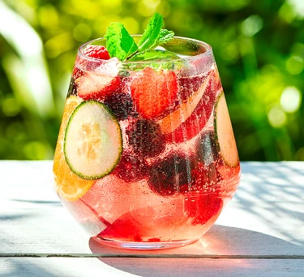

Summer cup mocktail

Get into the summer vibe with this fruity mocktail featuring red berries, lemonade, mint, and cucumber. Cool and refreshing, it's fabulous on hot summer days
Ingredients
- 1 cm thick slice of cucumber
- 1 spring mint
- few frozen red berries
- 120ml clear, sparkling lemonade
- ice
- To garnish- more frozen berries, chopped fruits, cucumber slice, mint, citrus - all optional
Steps
- Chop the cucumber and mint sprig into small pieces. Bring 200ml water to the boil in a small pan and then add the mint and cucumber. Turn off the heat and leave for 2 mins. Add a small handful of frozen berries, let them defrost for a minute, then crush them lightly with the back of a spoon. Strain the mixture. This will keep in the fridge for up to 24 hours and will be enough to make four drinks.
- Pour 40ml of your strained mixture into a tall glass. Add a handful of ice and top up with 120ml lemonade. Garnish with whatever chopped fruit you like or some more frozen berries and mint leaves if you have them. Stir gently to combine.